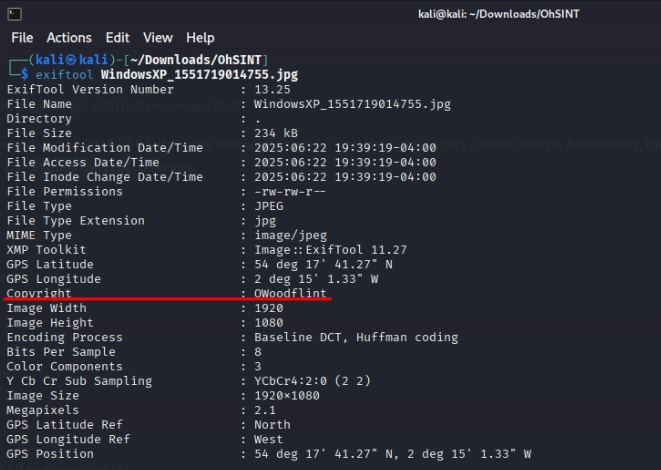
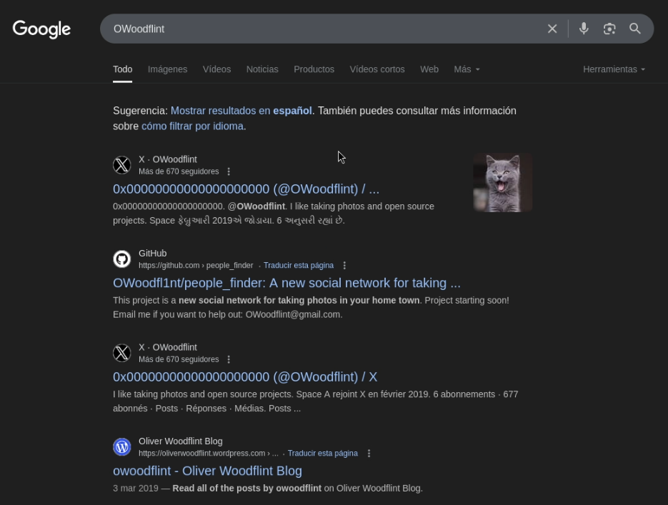
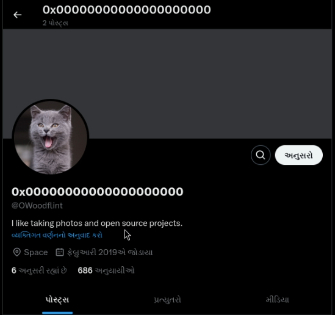
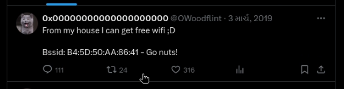
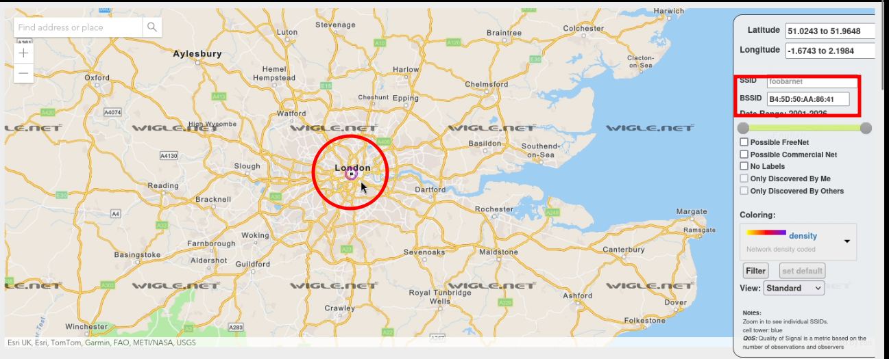
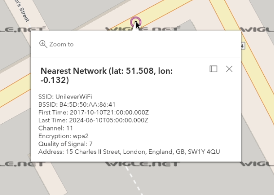
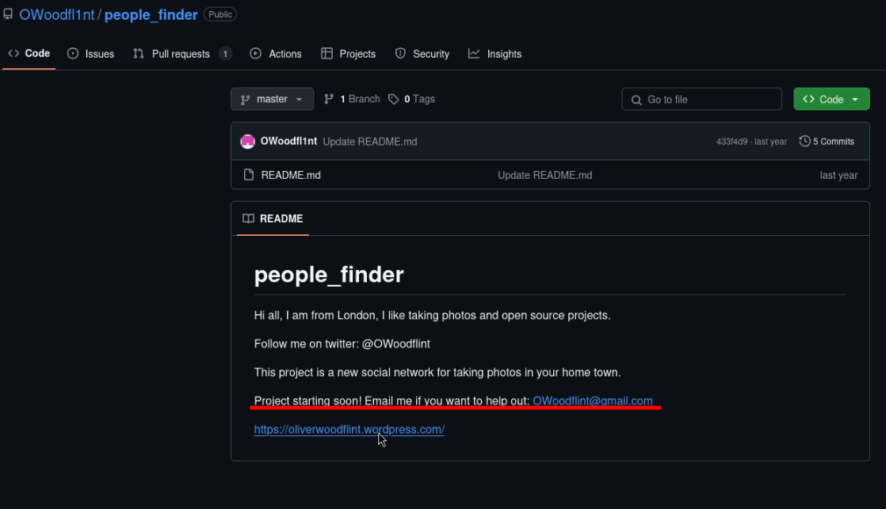
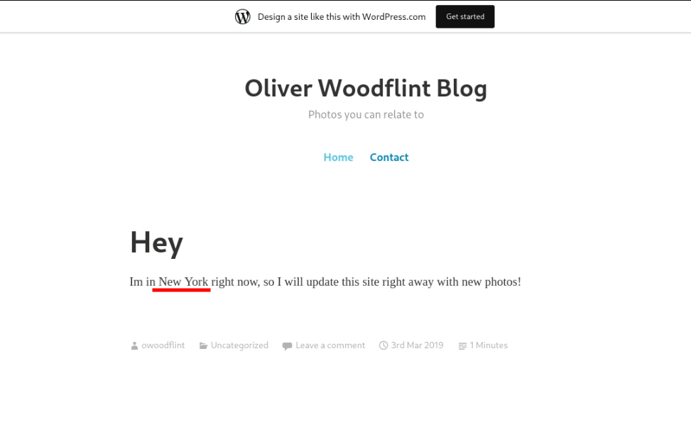
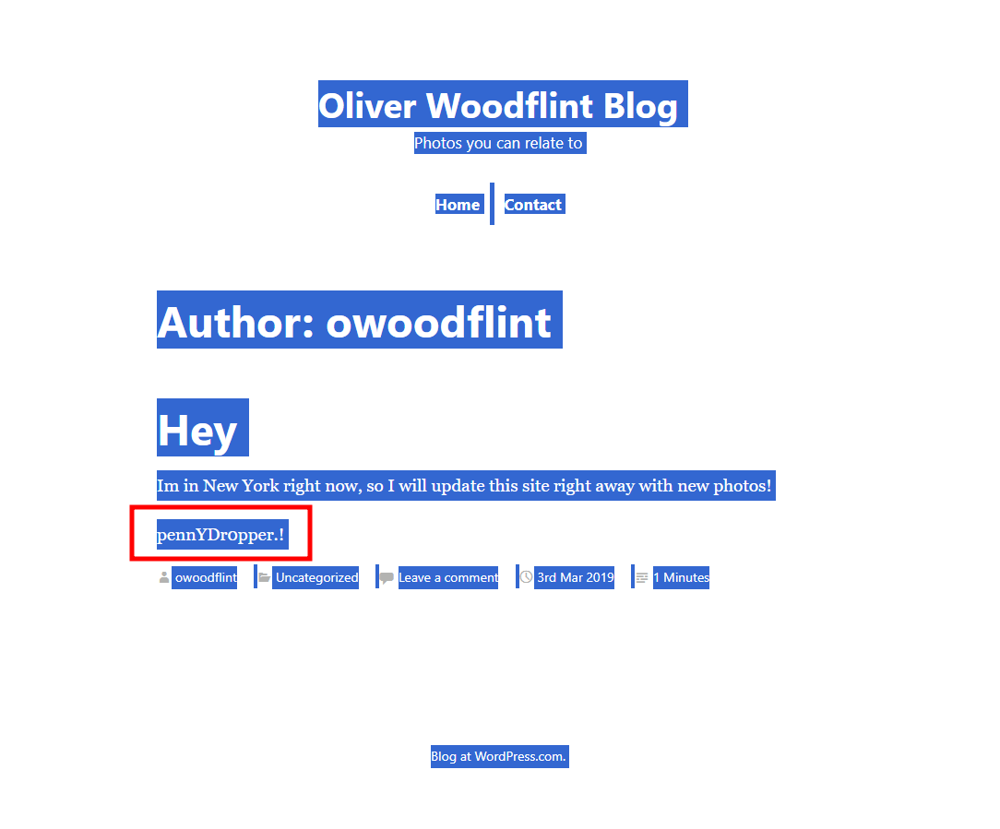

OhSint - Write-Up
Hoy tenemos un reto algo diferente OhSint en . Este desfío consiste en utilizar herramientas OSINT para encontrar información de la persona que está detras de la siguiente imagen.
 ¡¡Vamos al lío!!
¡¡Vamos al lío!!
Análisis de la imágen
Si tenemos que analizar a fondo una imagen, la primera herramienta que se nos viene a la cabeza es exiftool, la cual nos sirve para ver
Lo más interesante que encontramos son los derechos de autor de la imagen. No parece un nombre real, seguramente sea un NickName. Probemos a buscarlo:
Encontramos una cuenta de x, github y WordPress. Interesante, vayamos por orden de las preguntas.
Exploración web
What is the user's avatar of?
Esta pregunta la podemos resolver entrando en su cuenta de X:
 > catAdemás de su foto de perfil, encontramos una publicación en la cual expone su BSSID. Esto nos ayudará con la siguiente pregunta.
What city is this person in?
Con la información que sacamos en la imagen anterior, podemos encontrar el lugar de residencia de la persona que está detras de todo esto.
Para ello usaré la herramienta online wigle.net.
 > LondonWhat is the SSID of the WAP he connected to?
Para resolver esta pregunta, podemos usar la misma web, pero debemos registrarnos para poder usar todas funciones que nos ofrece.
 > UnileverWiFi¡Ojo! Es obligatorio hacer clic lo más cerca posible al punto, podría no darnos la información que realmente queremos.
What is his personal email address?
Cambiemos ahora la fuente de nuestra información y vayamos a su GitHub:
Aquí volvemos a encontrar su cuenta de X y WordPress, además de su correo personal
> OWoodflint@gmail.comWhat site did you find his email address on?
Esta pregunta la acabamos de resolver, la hemos encontrado en su cuenta de GitHub
> GithubWhere has he gone on holiday?
No se encuentra nada relevante en sus commits, veamos su página web:
Oliver lleva más de 6 años de vacaciones en Nueva York, bien por él.
> NEW YORKWhat is the person's password?
No mentiré, estuve un buen rato buscando la contraseña, comentarios de las publicaciones, commits antiguos, nada.
De no ser porque, por error, seleccioné toda la página, no la habría encontrado:
Y ya habríamos terminado este desafío de OSINT. Es un reto básico pero muy bueno para empezar y recordar herramientas viejas.